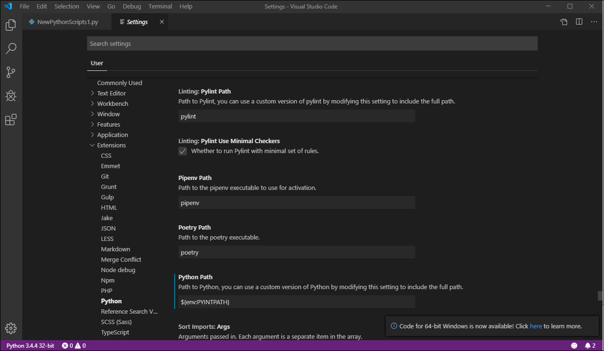

iTest User's Guide
The iTest package includes the PythonWin IDE to help with debugging Python scripts. You can launch this as a standalone application or from Test Manager by right-clicking a script and selecting the Debug... option. In some cases, the IDE may not be adequate for all developers. This guide outlines the process for downloading and installing the VS Code IDE to enhance your debugging system by connecting it to the iTest PythonEngine executable as a replacement for the PythonWin debugger.
 |
NOTE: | "VS Code" is another name for the Visual Studio Code software. |
Using your web browser, navigate to https://code.visualstudio.com/download. Click on the User: 32bit version to download the installer. Run the installer after it is downloaded.
In a text editor, load pywin.cmd from the iTest/Execute folder. This script will establish that you want to use VS Code for debugging. Starting VS Code with this script will temporarily add the iTest/Execute folder to your path so your python scripts will have access to the iTest-specific functions supplied by the iTest DLLs (e.g., RDBSetValue and SendToMailslot).
set PATH=%~dp0;%PATH%
%~dp0\Python37\Lib\site-packages\pythonwin\Pythonwin.exe %1 %2
REM if you would rather use VS Code to debug, comment out the previous line and:
REM 1) In VS Code Settings be sure to set
REM "Python: Python Path" to "${env:PYINTPATH}"
REM 2) Uncomment the following lines
REM set PYINTPATH=%~dp0\Python37\python.exe
REM CD "%USERPROFILE%\AppData\Local\Programs\Microsoft VS Code"
REM Code.exe %2
Edit the file as described in the comments in the file. When you are finished, it should look like this:
set PATH=%~dp0;%PATH%
REM %~dp0\Python37\Lib\site-packages\pythonwin\Pythonwin.exe %1 %2
REM if you would rather use VS Code to debug, comment out the previous line and:
REM 1) In VS Code Settings be sure to set
REM "Python: Python Path" to "${env:PYINTPATH}"
REM 2) Uncomment the following lines
set PYINTPATH=%~dp0\Python37\python.exe
CD "%USERPROFILE%\AppData\Local\Programs\Microsoft VS Code"
Code.exe %2
Launch VS Code by clicking on the modified pywin.cmd.
In VS Code, under File > Preferences > Settings > Extensions > Python > Python Path enter ${env:PYINTPATH}. This, in combination with the PYINTPATH variable settings in pywin.cmd, will establish that the interpreter supplied with iTest is to be used. Close VS Code so that all of the settings are saved.
VS Code Path

Re-start VS Code using pywin.cmd file. Locate the python file (*.py) to be debugged (File > Open File).